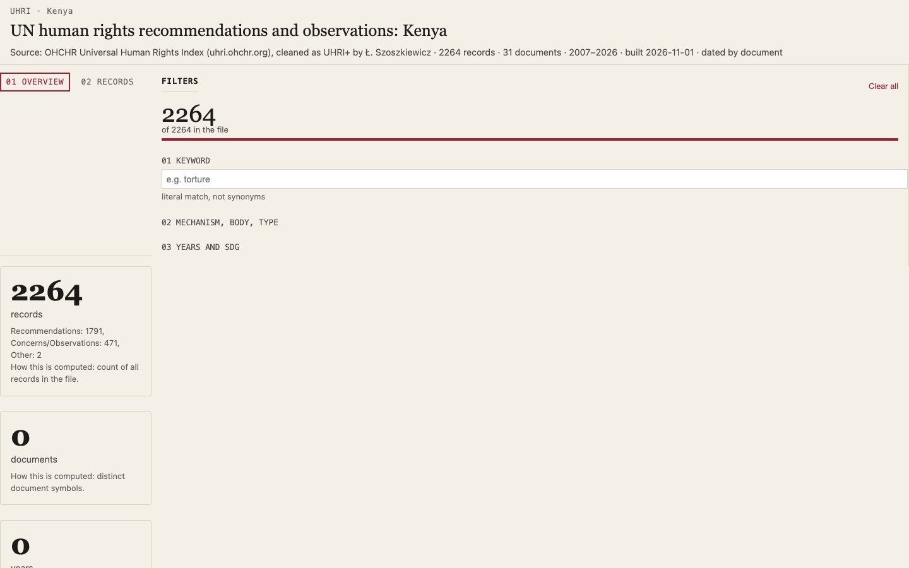

8/8 · 188.4 s · $0.035 · 2020 lines
all checks passed

9/9 · 14.7 s · $0.015 · 2033 lines
all checks passed

9/9 · 19.6 s · $0.026 · 2098 lines
all checks passed

9/9 · 28.4 s · $0.007 · 2098 lines
all checks passed
Run 2026-11-04T22-42-31. Country: Kenya. Click a screenshot to open the app.
| Mistral Large 3 · France · Mistral (EU) | |
|---|---|
| s7-1-dashboard | 8/8 · 188.4 s · $0.035 · 2020 lines all checks passed |
| edit-1-column | 9/9 · 14.7 s · $0.015 · 2033 lines all checks passed |
| edit-2-chart |  9/9 · 19.6 s · $0.026 · 2098 lines all checks passed |
| edit-3-filter | 9/9 · 28.4 s · $0.007 · 2098 lines all checks passed |